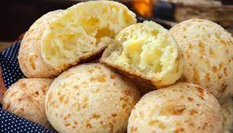

Pão de queijo

Ingredientes
- 170 g de leite
- 50 g de óleo ou azeite
- 340 g de polvilho doce
- 11 g de sal
- 50 g (1 unidade) de ovo
- 230 g de queijo muçarela ralada
Modo de preparo
- Ferver o leite com o óleo e escaldar o polvilho.
- Adicionar o sal e o ovo, e misturar bem.
- Acrescentar o queijo e amassar até ficar uma massa homogênea.
- Modelar em bolinhas e colocar em um tabuleiro untado, mantendo uma distância entre elas.
- Assar a 180º C por 20 a 30 minutos.
Observações
- Pode-se adicionar 1 colher (sopa) de chia na hora de misturar o queijo.
- Receita da Eduk.